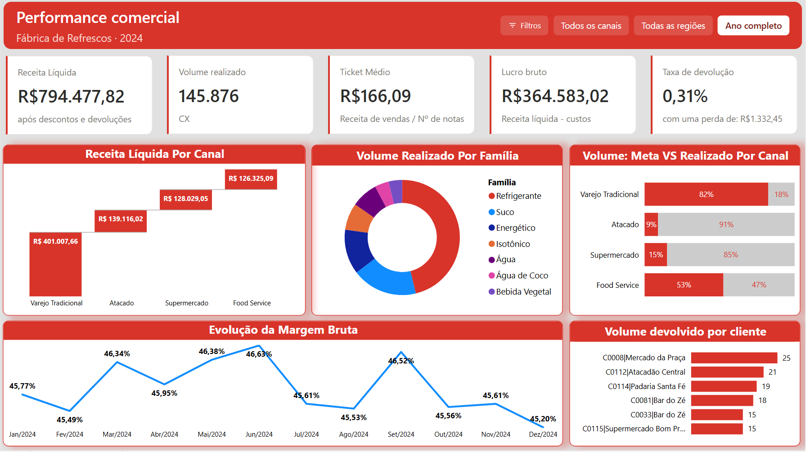

Dashboard executivo
Dashboard criado para visão executiva de empresa de bebidas, utilizando Power BI para análise de dados e visualização de métricas-chave, usando DAX para cálculos personalizados, além do Python para análise exploratória inicial dos dados e criação de indicadores. O dashboard permite a tomada de decisões estratégicas